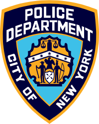

SYSTEM INITIALIZING...
접속할 관할 구역과 시간대를 선택하십시오.
FROM: 1 POLICE PLAZA (NYPD HQ)
TO: COMMANDER, PRECINCT 01
* 통신망 연결을 위해 유효한 API 키가 필요합니다. 타임아웃 발생 시 자체 오프라인 엔진이 가동됩니다.
시나리오 1 : 락다운 (20턴) 방어 작전이 종료되었습니다.플레이해주셔서 감사합니다.
TO: 1 POLICE PLAZA (HQ COMMAND)
DATE: 2022-02-13